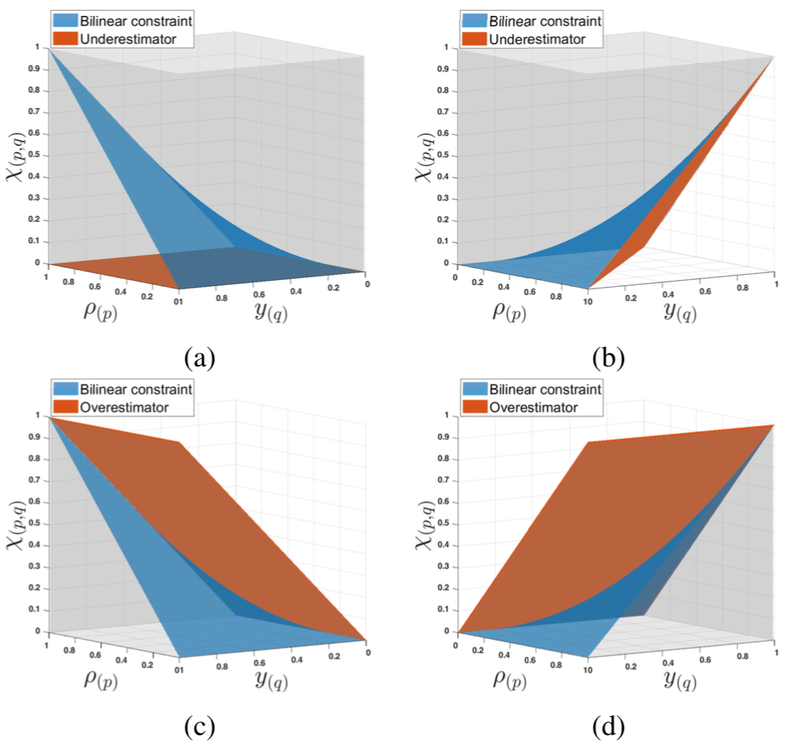

[T-RO] Distributionally robust motion control using CVaR
The paper “ Wasserstein distributionally robust motion control for collision avoidance using conditional value-at-risk ” has been accepted for publication in the IEEE Transactions on Robotics . It presents a novel risk-aware motion control tool for ...
TAC: Wasserstein
Wasserstein distributionally robust stochastic control: A data-driven approach. Insoon Yang. IEEE Transactions on Automatic Control,vol. 66, no. 8, pp. 3863-3870, 2021.

[CDC (2 papers)] Anderson acceleration for POMDPs, Distributionally robust control in learning-enabled environments
The papers “On Anderson Acceleration for Partially Observable Markov Decision Processes”, and “Improving the Distributional Robustness of Risk-Aware Controllers in Learning-Enabled Environments” have been accepted to the IEEE Conference on Decision and Control (CDC) . On ...
Factory
Appropriate Smart Factory for SMEs: Concept, Application and Perspective. Woo-Kyun Jung, Dong-Ryul Kim, Hyunsu Lee, Tae-Hun Lee, Insoon Yang, Byeng D. Youn , Daniel Zontar, Matthias Brockmann, Christian Brecher , Sung-Hoon Ahn. International Journal of Precision ...
CDC21:pomdp
On Anderson acceleration for partially observable Markov decision processes. Melike Ermis, Mingyu Park, and Insoon Yang. Proceedings of the 60th IEEE Conference on Decision and Control (CDC), pp. 4478-4485, 2021.